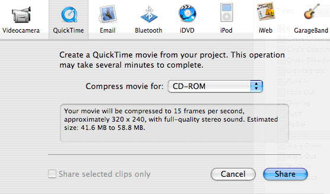

Exporting Your iMovie
So you're done with your first iMovie project! Let’s export your video for the world to see. Go to the file menu, and select “Export…”. A dialog will come up with options for exporting your movie.

We will be using Quicktime today, so that we can play this video on computers. A brief summary of the other options:
- Videocamera: Export the video back onto a FireWire-compatible video camera, for archiving on tape.
- Quicktime: Export the video into a QuickTime file, playable on most computers .
- Email: Export the video at low quality settings, so that it can be emailed to another person.
- Bluetooth: Save your movie to a wireless Bluetooth device.
- iDVD: The other most common export, besides to QuickTime. Using the iDVD option will open Apple’s iDVD application, for you to be able to turn your iMovie project into a DVD.
- iPod: sets up the video for display on an iPod.
- iWeb: Exports the video at low settings, for use in websites.
- GarageBand: Exports the video to the GarageBand application, for more advanced audio editing.
Select QuickTime, and click the share button. The iMovie application will begin to process and export your video to a single file. Be warned, this may take a long time, depending on how long your movie is.
And that’s it! You now have an QuickTime movie file, ready to be saved to a disk, sent to others, or just kept on your computer.
|